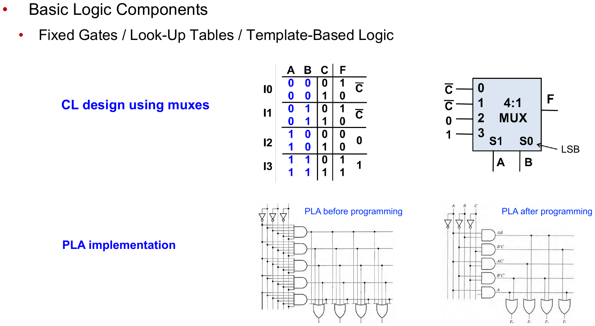

EECE274 디지털시스템설계 · 개념 정리본← 전체 목차
L08. 조합 논리 구현 기술
Combinational Logic Technologies · 중간고사 범위
핵심 정리. 구현 방식 3종: fixed gates(직접 논리 게이트) · LUT(진리표를 메모리에 저장, FPGA) · template-based(PLA: AND plane + OR plane 프로그래밍). mux 하나로도 임의 함수 구현 가능 — 선택 입력에 변수, 데이터 입력에 나머지 변수의 함수.
개념 · mux로 조합 논리 설계
직관: mux = 선택 입력이 고르는 진리표.
4:1 mux에 선택 입력 A, B를 걸고 데이터 입력을 C의 함수로 두면 3변수 함수 구현:
I₀ = C̄, I₁ = C̄, I₂ = 1, I₃ = 1 → F(A,B,C) 결정.
규칙: 선택 입력 조합(행)마다 남은 변수 값에 따른 F 값을 데이터 입력에 배선.
I₀ = C̄, I₁ = C̄, I₂ = 1, I₃ = 1 → F(A,B,C) 결정.
규칙: 선택 입력 조합(행)마다 남은 변수 값에 따른 F 값을 데이터 입력에 배선.
개념 · PLA (Programmable Logic Array)
- AND plane: 필요한 곱항들을 프로그래밍해 생성.
- OR plane: 곱항들을 선택해 합산 → 여러 출력 함수 동시 구현.
- 여러 함수가 같은 곱항을 공유할 수 있어 PROM보다 면적 효율적.
그림 · mux 설계와 PLA

4:1 mux로 3변수 함수 구현(위), PLA 프로그래밍 전/후(아래)
한 줄 요약: fixed gates / LUT / PLA 중 무엇으로 구현하든 논리 함수는 같다 — mux 데이터 입력 배선과 PLA의 AND·OR plane 역할을 설명할 수 있으면 충분.